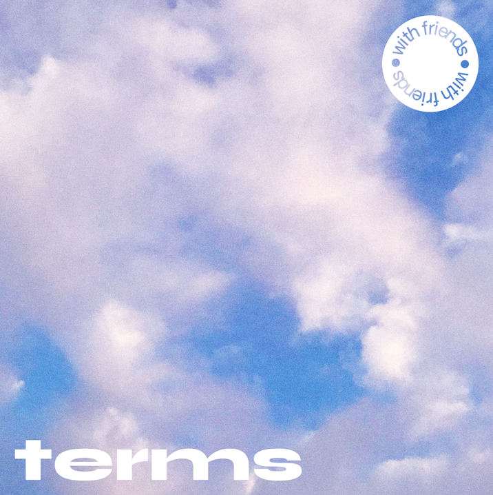
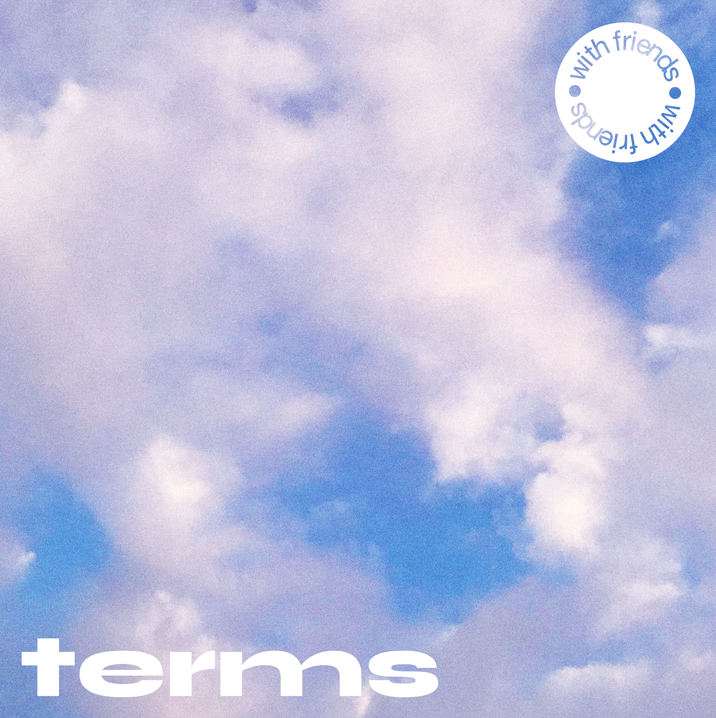

2Obituary for a Year 2020
Writings from 2018 through 2020 chronicling the illness and subsequent death of my father in October of 2019. View here.
Writings from 2018 through 2020 chronicling the illness and subsequent death of my father in October of 2019. View here.

3Album Covers 2020
Album covers created for the music project "With Friends."
Album covers created for the music project "With Friends."
 

4Draw the Alphabet 2020
A letter drawing application that utilizes AI facial tracking technology. Users draw letters of the alphabet with their nose and the letters are recorded in a gallery. View here.
A letter drawing application that utilizes AI facial tracking technology. Users draw letters of the alphabet with their nose and the letters are recorded in a gallery. View here.
5AD INTEREST 2019
A t-shirt that examines how Instagram's data collection tactics intervene in the process of identity building through social media.
A t-shirt that examines how Instagram's data collection tactics intervene in the process of identity building through social media.
6Preposterous Exercises 2019
A card game that investigates the relationship between the effects of our online presence in our offline lives.
A card game that investigates the relationship between the effects of our online presence in our offline lives.


7Tshirts 2019
Graphics created using Cinema4D and silkscreened onto t-shirts.
Graphics created using Cinema4D and silkscreened onto t-shirts.

8Psychic Evaluation 2018
How is the price of psychic work quantified? This short guide compares pricing with skillsets to examine the cost of divination.
How is the price of psychic work quantified? This short guide compares pricing with skillsets to examine the cost of divination.


9Magnolia2017
Paul Thomas Anderson's "Magnolia" in book form. Pagination allows for the reader to follow each individuals story line continuously or read the story as it was written.
Paul Thomas Anderson's "Magnolia" in book form. Pagination allows for the reader to follow each individuals story line continuously or read the story as it was written.